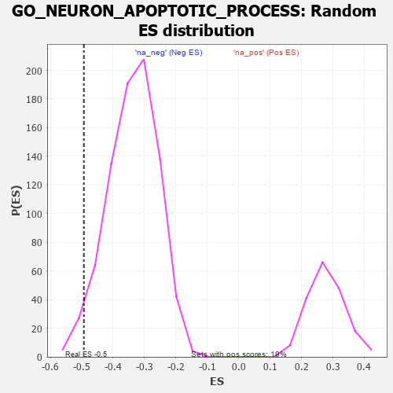

| | | Dataset | 7d |
| Phenotype | NoPhenotypeAvailable |
| Upregulated in class | na_neg |
| GeneSet | GO_NEURON_APOPTOTIC_PROCESS |
| Enrichment Score (ES) | -0.4931739 |
| Normalized Enrichment Score (NES) | -1.4632515 |
| Nominal p-value | 0.027027028 |
| FDR q-value | 0.22764684 |
| FWER p-Value | 1.0 |
Table: GSEA Results Summary
 Fig 1: Enrichment plot: GO_NEURON_APOPTOTIC_PROCESS
Fig 1: Enrichment plot: GO_NEURON_APOPTOTIC_PROCESS
Profile of the Running ES Score & Positions of GeneSet Members on the Rank Ordered List
| PROBE | GENE SYMBOL | GENE_TITLE | RANK IN GENE LIST | RANK METRIC SCORE | RUNNING ES | CORE ENRICHMENT | | 1 | TGFB3 | | | 49 | 2.654 | 0.0591 | No |
| 2 | TRIM2 | | | 100 | 1.628 | 0.0929 | No |
| 3 | GSK3A | | | 351 | 0.745 | 0.0796 | No |
| 4 | BAX | | | 387 | 0.711 | 0.0927 | No |
| 5 | LRP1 | | | 470 | 0.648 | 0.0983 | No |
| 6 | PITX3 | | | 594 | 0.596 | 0.0974 | No |
| 7 | ZPR1 | | | 967 | 0.491 | 0.0625 | No |
| 8 | MEF2C | | | 1054 | 0.473 | 0.0633 | No |
| 9 | AIFM1 | | | 1072 | 0.469 | 0.0727 | No |
| 10 | BACE1 | | | 1673 | 0.360 | 0.0058 | No |
| 11 | HYOU1 | | | 1692 | 0.358 | 0.0124 | No |
| 12 | MSH2 | | | 1819 | 0.334 | 0.0047 | No |
| 13 | PAK3 | | | 1889 | 0.322 | 0.0039 | No |
| 14 | HIPK2 | | | 2389 | 0.247 | -0.0531 | No |
| 15 | PIGT | | | 2450 | 0.236 | -0.0548 | No |
| 16 | CDK5 | | | 3480 | 0.080 | -0.1827 | No |
| 17 | PIN1 | | | 3543 | 0.069 | -0.1889 | No |
| 18 | FIS1 | | | 3654 | 0.051 | -0.2015 | No |
| 19 | NF1 | | | 3713 | 0.040 | -0.2079 | No |
| 20 | PARP1 | | | 4014 | -0.010 | -0.2455 | No |
| 21 | NRBP2 | | | 4274 | -0.055 | -0.2768 | No |
| 22 | ILK | | | 4510 | -0.096 | -0.3041 | No |
| 23 | NTRK2 | | | 4543 | -0.104 | -0.3056 | No |
| 24 | GATA3 | | | 4614 | -0.120 | -0.3115 | No |
| 25 | SRPK2 | | | 4790 | -0.155 | -0.3298 | No |
| 26 | TERT | | | 4801 | -0.157 | -0.3272 | No |
| 27 | FBXW7 | | | 4816 | -0.161 | -0.3250 | No |
| 28 | PDPK1 | | | 5043 | -0.207 | -0.3484 | No |
| 29 | ITSN1 | | | 5094 | -0.222 | -0.3492 | No |
| 30 | ATM | | | 5210 | -0.249 | -0.3576 | No |
| 31 | GRIN1 | | | 5381 | -0.291 | -0.3719 | No |
| 32 | G6PD | | | 5638 | -0.358 | -0.3954 | No |
| 33 | SET | | | 5895 | -0.434 | -0.4171 | No |
| 34 | PPT1 | | | 6038 | -0.485 | -0.4231 | No |
| 35 | ROCK1 | | | 6152 | -0.520 | -0.4246 | No |
| 36 | GRID2 | | | 6170 | -0.528 | -0.4137 | No |
| 37 | THRB | | | 6178 | -0.531 | -0.4015 | No |
| 38 | CDC42 | | | 6236 | -0.548 | -0.3952 | No |
| 39 | CLN3 | | | 6580 | -0.699 | -0.4213 | No |
| 40 | TOX3 | | | 7150 | -1.033 | -0.4677 | Yes |
| 41 | GRN | | | 7319 | -1.194 | -0.4596 | Yes |
| 42 | CASP2 | | | 7442 | -1.322 | -0.4424 | Yes |
| 43 | KCNB1 | | | 7444 | -1.327 | -0.4099 | Yes |
| 44 | GRIK2 | | | 7552 | -1.471 | -0.3872 | Yes |
| 45 | BOK | | | 7715 | -1.817 | -0.3630 | Yes |
| 46 | CASP3 | | | 7747 | -1.902 | -0.3201 | Yes |
| 47 | GRIK5 | | | 7792 | -2.044 | -0.2754 | Yes |
| 48 | GRM4 | | | 7847 | -2.393 | -0.2233 | Yes |
| 49 | FYN | | | 7881 | -2.622 | -0.1629 | Yes |
| 50 | ARRB1 | | | 7935 | -3.377 | -0.0865 | Yes |
| 51 | XIAP | | | 7947 | -3.696 | 0.0030 | Yes |
Table: GSEA details [plain text format]

Fig 2: GO_NEURON_APOPTOTIC_PROCESS: Random ES distribution
Gene set null distribution of ES for GO_NEURON_APOPTOTIC_PROCESS